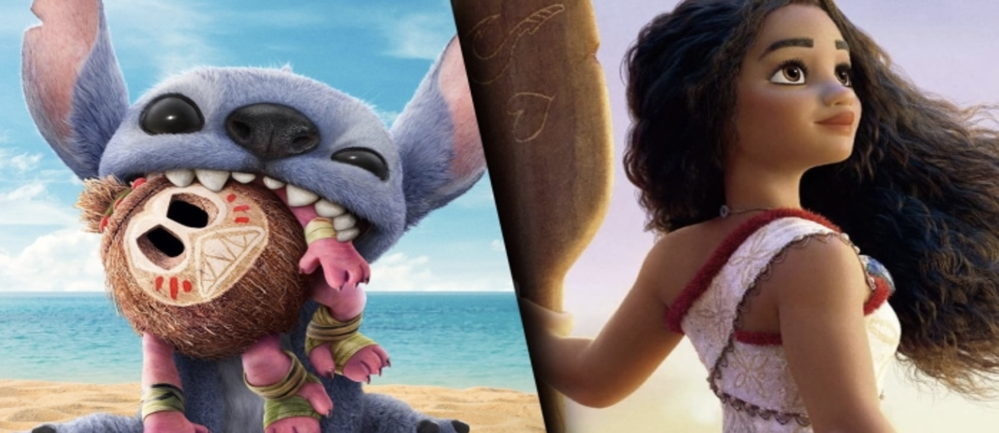
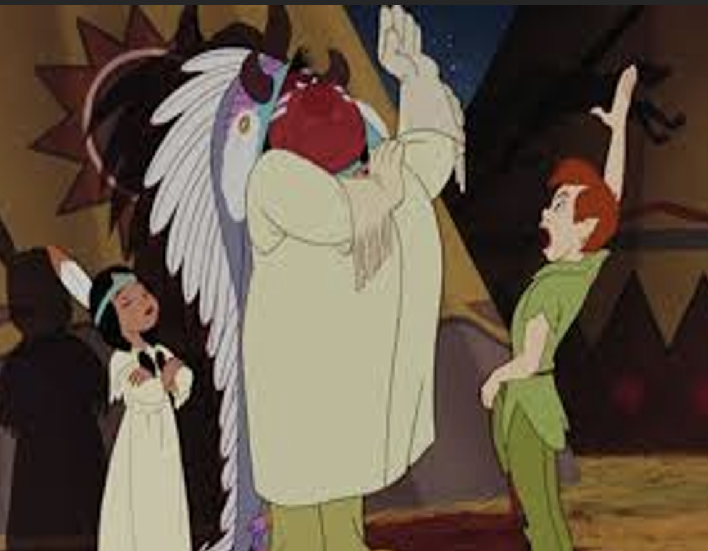
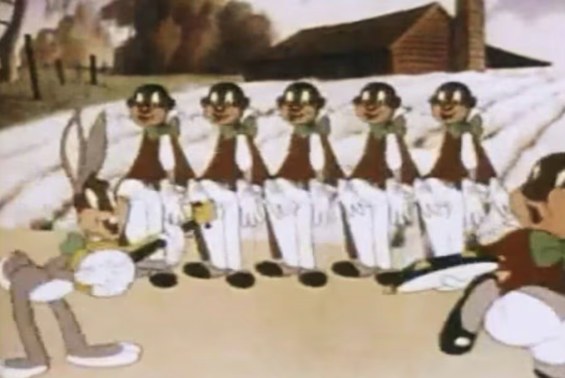
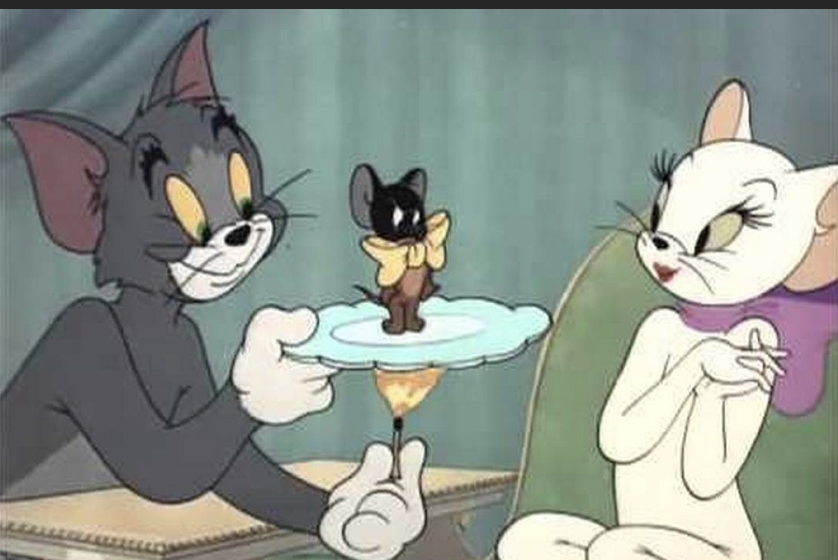
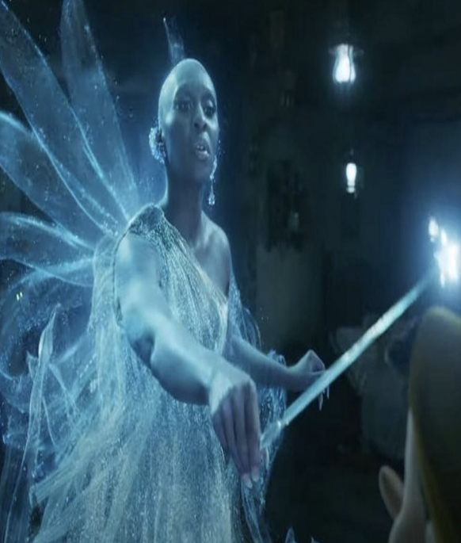
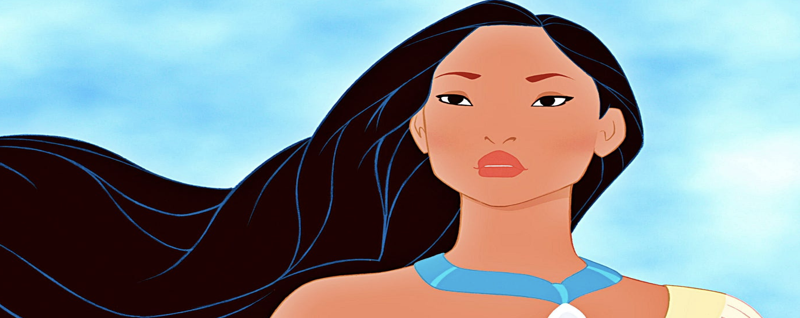

Reportagem — Cultura e Arte Mexicana
O racismo na cultura pop
O racismo na indústria das animações Citando a Disney podemos tomar como exemplo Ela mesma e suas obras para abordar este tópico. Moana, Encanto e Lilo e Stich que por mais que não sejam perfeitos eles tentam tomar um caminho condizente com a história e cultura dos povos originários dos locais no qual os filmes abordam.  Há filmes como Dumbo que a Disney tenta esconder as críticas tecidas desde que surgiu o filme. Segue os exemplos: “O vocalista do grupo de corvos foi batizado de Jim Crow (crow significa corvo em inglês), uma referência às chamadas leis de Jim Crow que normatizaram a segregação racial pública no sul dos Estados Unidos. Esse é também o nome de um personagem de teatro que se vestia com roupas esfarrapadas e usava maquiagem preta para entreter – um retrato racista de escravos afro-americanos”. Disponível em:https://www.brasildefato.com.br
Em Peter Pan, por exemplo, os povos indígenas da América falam uma língua incompreensível e são frequentemente mencionados como "peles-vermelhas". Desde então, a Disney adicionou uma advertência sobre o conteúdo de vários de seus clássicos, incluindo Dumbo, Peter Pan e Aristogatas .A advertência diz: "Este programa inclui retratos negativos e/ou maus-tratos de povos ou culturas. Esses estereótipos eram errados na época e são errados. imagem Disponível em: https://encrypted-tbn0.gstatic.com/images?q=tbn:ANd9Gc RpMOkaHVZVi5ecousQ-b2ydeW7EbOq1-40Eg&s  Adaptações Live Actions E Descaracterização De Personagens Nos últimos anos, a indústria do entretenimento tem dado passos importantes em direção à representatividade. E um dos debates mais polêmicos dessa mudança gira em torno da troca de etnia em personagens famosos nas versões live-action de animações clássicas. Dois exemplos emblemáticos dessa transformação são as atrizes Halle Bailey, que deu vida à princesa Ariel em A Pequena Sereia (2023), e Cynthia Erivo, que interpretou a Fada Azul no remake de Pinóquio (2022). Ambas são mulheres negras escaladas para papéis que, nas versões animadas, eram representados por personagens brancos. As escolhas causaram polêmica — especialmente nas redes sociais. Houve quem reclamasse da "mudança de aparência" dos personagens. Mas por trás das críticas, há também uma questão mais profunda: a resistência de parte do público à quebra de padrões antigos.
Por outro lado, para muitas pessoas, essas mudanças são vistas como positivas e necessárias. A presença de Halle  Além de simplesmente atender à demanda de um grupo específico de forma superficial e com fins apenas lucrativos, seria mais eficaz e respeitoso que a indústria do entretenimento investisse na criação de personagens, histórias e obras originais centradas em pessoas racialmente minorizadas. Desenvolver narrativas autênticas desde o início não apenas representaria essas populações de maneira mais significativa, como também agradaria a um público mais amplo. Essa abordagem equilibra os interesses de diferentes grupos e, ao mesmo tempo, poderia gerar maior retorno financeiro para os criadores das obras. (as imagens anteriores foram retiradas de seus respectivos filmes) 
Desenhos antigos e o racismo silencioso que marcou gerações  Durante décadas, desenhos animados populares como Tom & Jerry, Looney Tunes, Pica-Pau, entre outros, apresentaram personagens e cenas com conteúdo abertamente racista ou recheado de estereótipos. Eram comuns as representações de pessoas negras com traços exagerados, vozes caricatas e comportamentos submissos, muitas vezes usados apenas como alívio cômico. Essas produções, criadas em contextos historicamente marcados pela segregação e discriminação, ajudaram a reforçar ideias preconceituosas que, por muito tempo, passaram despercebidas pelo grande público. Mesmo sem a intenção declarada, esses desenhos naturalizaram o racismo e ajudaram a perpetuar imagens distorcidas sobre grupos raciais minorizados. Atualmente, muitos desses conteúdos vêm sendo revistos, editados ou até mesmo acompanhados de avisos sobre seu teor problemático. A revisão crítica desse material é vista como um passo necessário para compreender como o racismo se manifestou, e ainda se manifesta, no entretenimento. Mais do que apagar o passado, reconhecer essas falhas é essencial para que novas gerações cresçam consumindo histórias que respeitem e representem a diversidade de forma justa e responsavel.
fotos disponíveis em: https://oglobo.globo.com/brasil/midia/servico-de-streaming-da-amazon-inclui-advertencia-sobre-racismo-em-desenhos-de-tom-jerry-14102719 https://www.estadao.com.br/fotos/emais/tv/veja-5-momentos-de-desenhos-antigos-que-jamais-seriam-exibidos-hoje/?srsltid=AfmBOoo5xQshC3axlbMrZLzJB93FJYwd_PDLCqFW-KK1MLSnTqL8kwsO&token=%7B%22current%22%3A0%7D
os casos de Pocahontas e Aladdin  Mesmo sendo lembrados com carinho por muitos, filmes clássicos da Disney como Pocahontas (1995) e Aladdin (1992) carregam estereótipos e representações problemáticas que refletem visões distorcidas sobre povos não-brancos. No caso de Pocahontas, o filme romantiza a colonização europeia e suaviza o impacto devastador que os colonizadores tiveram sobre os povos indígenas da América. A personagem principal, inspirada em uma figura histórica real, é retratada com traços ocidentalizados e sua história é adaptada para parecer um conto de amor, apagando a violência e o desequilíbrio de poder entre os colonos e os nativos. Já Aladdin, ambientado em um “Oriente” genérico, mistura elementos de diversas culturas árabes e sul-asiáticas sem fidelidade cultural, criando um cenário estereotipado e exótico. Além disso, personagens vilanizados costumam ter traços mais “carregados” e acentos mais marcados, enquanto os heróis são retratados com aparência e fala mais “ocidentalizadas”, o que reforça uma ideia sutil de superioridade cultural. Esses exemplos mostram como, mesmo em obras voltadas ao público infantil, o racismo pode aparecer de forma sutil e ser absorvido sem questionamento. Hoje, muitos desses filmes são alvo de críticas e debates, e plataformas de streaming já passaram a incluir alertas sobre representações culturais problemáticas. Reconhecer essas falhas é um passo importante para criar conteúdos mais justos e representativos no futuro. anteriores foram retiradas de seus respectivos filmes)
imagem disponível em: https://medium.com/musicais-utopias-no-audiovisual/pocahontas-e-mulan-a-indecis%C3%A3o-e-a-culpa-d62e3faef50a
O racismo na indústria musical – – – O racismo na indústria musical é um problema estrutural que se manifesta de diversas formas, desde a falta de representatividade de artistas negros em cargos de liderança até a apropriação cultural e a segregação de gêneros musicais. A indústria frequentemente silencia e marginaliza artistas negros, enquanto se beneficia da sua arte e estética. Algumas formas de racismo na indústria musical são a falta de representatividade. A presença de negros em cargos de liderança e como artistas em destaque é significativamente menor em comparação com a população branca, tanto no Brasil quanto em outros países. Apropriação cultural é outro exemplo. A indústria muitas vezes se apropria de elementos da cultura negra, como ritmos, estilos musicais e estéticas, sem reconhecer a origem e a importância desses elementos.A segregação de gêneros também está presente. Gêneros musicais associados a artistas negros, como o funk e o rap, muitas vezes são marginalizados e estigmatizados, enquanto outros gêneros que se beneficiam da influência da música negra são considerados mais "legítimos". Há também discriminação e preconceito. Artistas negros enfrentam preconceitos e estereótipos que dificultam sua ascensão e sucesso na indústria. Não esquecendo também do racismo institucional, afinal, a falta de políticas e práticas que promovam a igualdade racial na indústria musical perpetua o racismo estrutural. A estigmatização de artistas negros inclui associações a estereótipos negativos, falta de reconhecimento e respeito, além de refletir e perpetuar desigualdades sociais mais amplas, dificultando sua mobilidade social e econômica na indústria musical. – – – Impacto do racismo na indústria musical – – – A falta de representatividade e o preconceito impedem que artistas negros tenham acesso a oportunidades iguais no mercado musical. Também a apropriação cultural e a segregação de gêneros musicais contribuem para a desvalorização da cultura negra e sua invisibilidade aqui podemos ver alguns casos como: — A polêmica envolvendo a remoção da música "Old Town Road" de Lil Nas X da parada country da "Billboard". — A dificuldade de artistas negros em serem reconhecidos e valorizados em gêneros musicais como o sertanejo. — A estigmatização e criminalização do funk como gênero musical e a falta de proteção trabalhista para seus artistas. — A invisibilidade de mulheres negras na indústria musical, mesmo em gêneros populares como o sertanejo. — É importante que a indústria musical reconheça e combata o racismo em todas as suas formas, promovendo a diversidade, a representatividade e a igualdade de oportunidades para todos os artistas, independentemente de sua raça ou origem. A estigmatização de artistas negros inclui associações a estereótipos negativos, falta de reconhecimento e respeito, além de refletir e perpetuar desigualdades sociais mais amplas, dificultando sua mobilidade social e econômica na indústria musical.